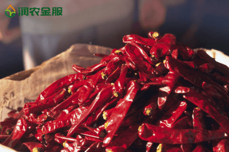

润农金服：互联网+农业+金融
润农金服成立于2015年，公司管理层由百度、消费金融、恒生电子等高管组成，具有成熟的互联网金融经验。公司致力于为“三农”服务，解决农村产业转型中的资金问题，切实带领农户获得更加丰厚的劳动回报。
找准定位，打造农村金融品牌
目前，我国的农业金融行业正处于快速发展壮大的阶段，正在形成银行业金融机构、非银行业金融机构和其他形式金融机构组织组成的层次丰富、覆盖面广泛、适当竞争的金融服务体系。润农金服正是在这种政策指引和背景下，找准自身定位，明确市场目标，致力于为广大中小“三农”企业、农业散户提供灵活的融资贷款方案。
润农金服作为一家金融行业在进行融资贷款项目的开展之前，进行了充分的准备工作。公司将农业产业链重新整合，让羊毛出在猪身上，从产业服务中去谋取利益。虽然是将资金投入到农户生产和消费中，公司的主要利润来源却不是农户贷款需要付出的利息。这种创新模式的建立降低了资金回流中的风险，也在农户中打造了金牌的口碑，为公司树立了较好的品牌形象。
试点成功，创新模式屡创佳绩
2016年，润农金服为了找到一条切实有效的路子让农户得到利益，在山西进行高产量新型辣椒种子的试点工程，通过免息向农户贷款并提供设备设施、技术支持等方式，帮扶当地农户进行大规模的辣椒种植。并且通过与行业龙头企业“老干妈”的合作，顺利完成所有产品的收购加工，减少中间环节，让所有参与的农户切实得到高利润回报。
截止到2016年润农金服的业务覆盖山西、河南、山东等省份，签约农户过万户，签约种植面积近10万亩，签约贷款金额近1亿元。
农户借助润农金服的产业金融服务，净收入直接提升了5倍，成功脱贫。当地通过产业替换，试点项目成为农村供给侧改革的典型案例，仅山西一个县就为农民增收1个亿。2017年，润农金服预计会在全国范围内建立惠农点3000个，建立一个庞大的惠农网络，为农民提供各种便利的金融业务。
合作社、经销商主动上门寻求合作
通过16年的佳绩让润农金服在网络上也是小有名气，有许多的经销商、贸易商和合作社主动找到润农金服来寻求合作，他们看中了润农的经营、生产一体化的模式和农业金融的巨大前景！
内蒙古地区：现在内蒙东北地区试点高附值作物比如玉米，辣椒等。润农金服农技部门在当地做试种，优选品种。意向跟种100万亩。
山西、广西地区：山西、广西等地筹备有机茶，绿色食品等，预计明年大规模扩种。并对接对家下游终端销售渠道。
山东地区：在山东日照等地大规模的养殖农户（养鸡、养猪、养牛）也与润农金服签订了农业资金等合作！
等等地区不胜枚举，润农金服的足迹踏遍祖国的大江南北，福泽千万农户！
惠农利民，企业重任在肩
中国是一个农业大国，然而农民的生存现状却并不乐观。和发达的西方农业相比，中国的农业生产和收入都处于非常低下的水平，这直接导致中国农村现存的大量“以工补农”情况，这是导致农村青壮年外出打工、农村空巢老人急剧上升、留守儿童等问题的直接因素。
润农金服勇于承担社会责任，发挥自身行业优势，将造福农户作为企业第一任务，帮助万千农户脱贫致富。润农金服实现精准扶贫政策，结合当地实际情况，整合企业资源，为农户寻找商机和合作机会，将农户生产产品直接对接给食品加工企业、贸易商、渠道商，把利润分配向农户倾斜。
利益是企业发展的直接目标，责任却是企业壮大的动力源头，让农户得到真正的实惠，润及万家，这就是润农金服的企业初衷。